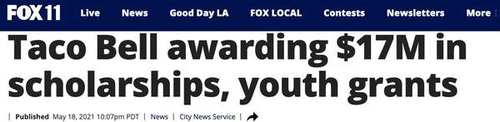
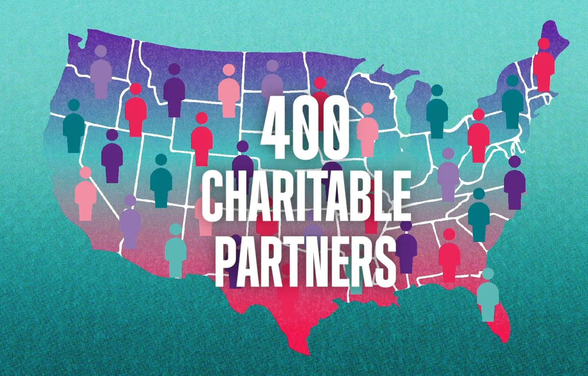
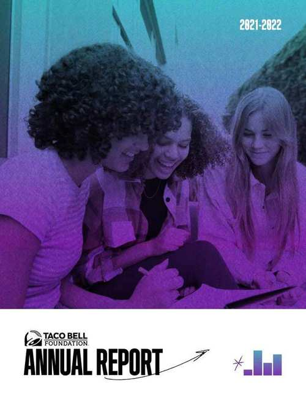

Featured Work
Taco Bell Foundation
Activating Purpose: Corporate Philanthropy as a Brand and Community Strategy
Social Impact Partnerships Communications Manager
Opportunity
The Taco Bell Foundation was distributing millions of dollars in grants to youth-serving organizations nationwide, but the impact was going unseen. The philanthropic work wasn't translating into brand reputation, franchisee pride, or employee engagement. The opportunity was to build a communications strategy that connected key stakeholders to the Foundation's mission and drove measurable impact and business results.
My Approach
I started by going deep with the key audiences: franchisees, restaurant employees, and consumers, and found a consistent disconnect between the dollars being distributed and the people and places they were reaching. I built a multi-channel communications strategy to close that gap, connecting franchisees directly to the local nonprofit partners their restaurants were funding and sharing stories with employees and consumers that got them invested in the mission.
I created and launched Day of Giving, an annual PR campaign built around the real stories of the young people whose lives were changed by the grants. By developing press materials, localized storytelling toolkits, and the Foundation's first impact report, I provided stakeholders with the tools to understand and amplify the work.
Impact
Stronger storytelling drove stronger engagement, which drove more donations, which funded more grants. This work gave the Foundation greater visibility and credibility, positioning it as a model for purpose-driven corporate philanthropy and strengthening Taco Bell's reputation as a company genuinely committed to the communities it serves.
Earned Coverage & Owned Content
Day of Giving earned 60+ placements and 5M+ impressions. The press materials, franchise toolkit, and partner amplification assets I built enabled franchisees and nonprofit recipients to carry the story into their own communities and local media.

"Taco Bell awarding $17M in scholarships, youth grants"
Day of Giving, one of 60+ placements nationally

Video — Scripted & Narrated
Taco Bell Foundation: Grants Program
400 charitable partners across the US. Scripted and narrated.

Annual Report — Project Managed
Taco Bell Foundation Annual Report 2021–2022
The Foundation's first annual report, project managed end to end